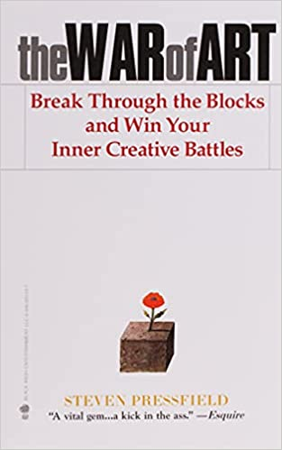

| # | Book | Message | Action | Edit | |
|---|---|---|---|---|---|
| 1 | Time mastery leads to life mastery. | Calendar/Time Block the entire day each morning based on my goals before doing anything else. |
Daily | ||
| 2 | We have around 75,000 thoughts per day & 90% are the same as the day before. Only changing 10% of your thoughts can drastically change your life. | 1. Set reminders throughout the day to ask myself my list of powerful questions. (.ex "What could I do today to move closer to my goals?") 2. Ten minute meditation using my affirmations. |
Custom | ||
| 3 |  | The gap between the life we currently live and the life we want to live is called "resistance". | Remember this quote when it comes to procrastination around my goals action items or not sticking to my calendared schedule. |
Daily | |
| 4 | There is only one thing that makes a dream impossible to acheive: the fear of failure. | Remember this quote when learning difficult concepts or pursuing something I want in my life. | Monthly | ||
| 5 | The most valuable task you can do each day are often the hardest. However, the payoff for completing these task efficiently can be tremendous. | When time blocking, always calendar the frog(s) first. | Weekly | ||
| 6 | We like to think our idols or successful people were born different then us. We don't think of them as ordinary people who chose to make themselves extraordinary. | Remember that if another human has done something so can you with a plan and dedication. | Monthly |